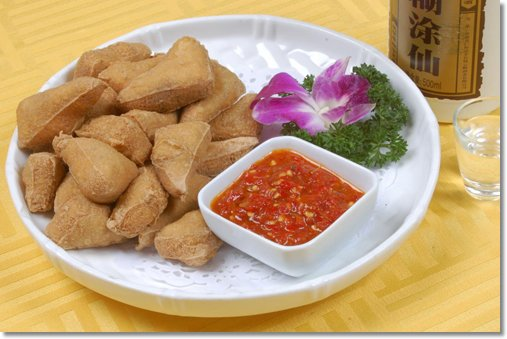
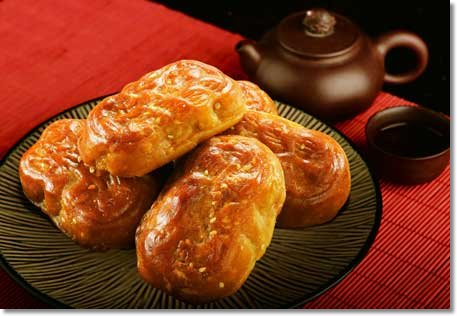
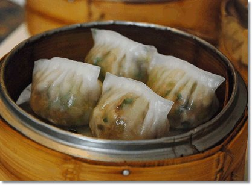
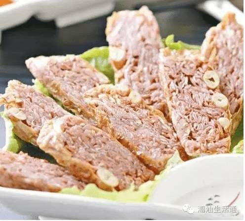
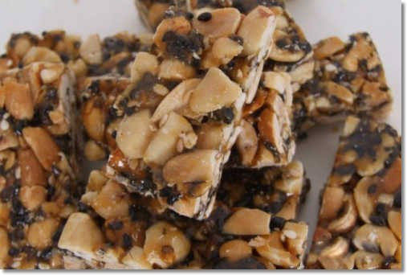
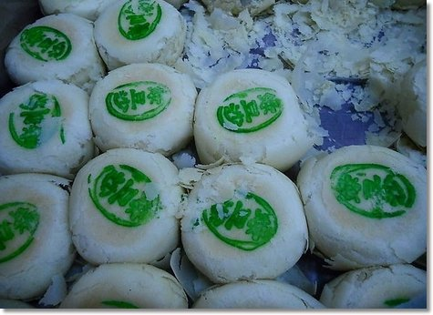

工夫茶是潮汕一带品茶的一种风尚，以其独特、精细而闻名。所谓工夫茶，是指泡茶的方式极为讲究，操作起来需要一定的功夫，而且操作时必须很“工夫”(精细的意思)。
工夫茶的基本特征，可用一句话加以概括:用小壶、小杯冲沏凤凰单枞茶。茶壶茶杯小不但可以使茶香不涣散，而且也是因为喝工夫茶往往不是为了解渴而是为了消遣、享受和作为迎宾敬客的重要手段。
牛肉丸作为著名的潮汕小食，在汕头已有近百年历史，牛肉丸可分为牛肉丸、牛筋丸两种，牛肉丸肉质较为细嫩，口感嫩滑，牛筋丸是在牛肉里加进了一些嫩筋，更有嚼头。
广东的“潮州粥”向来颇有名气，潮州人不仅重视吃粥，而且连煮饭时也喜欢多放水，据说饭热后捞起饭粒留下米汤，这米汤可以作饭后饮料或其他用途，延续了悭省又讲营养的好习惯。
民俗小吃。用大豆作主要原料，掺以薯粉、石膏、卤水制成的豆制品。制作工序是:磨浆、除渣、煮浆、配膏、试粉、掺膏粉、拌和定卤、包块、压块、煮熟，有的煮熟后还用栀子上色。特点是外皮柔韧，内肉嫩滑。
闻名遐迩的潮州小食腐乳饼，没尝过的不能算真正吃过潮菜!
蕉柑为全国推广的10个柑桔优良品种之一。普宁洪阳镇是蕉柑的主要产地，栽培柑桔成员国史修久，《潮州志》记载:“宝镜院柑苗以其成活率高而闻名潮州”。洪阳盛产的蕉柑具有清甜、多汁、少核、个大的特点，被誉为“潮果皇后”，载誉国内外。
“潮州粉粿”是一款颇具特色的传统潮州小食，它名为“粿”，但形却似鸡冠饺形，由于它的皮采用澄面皮，故蒸熟后晶莹透明，红红绿绿的粿馅分明可见，十分惹人喜爱。
普宁芋头卷的制法,和普宁菜头卷的制法大同小异,同样是取本地产的,淀粉含量高的优质芋头,去皮洗净,切成细丝加入。
为普宁大长陇陈广泰店创制，该号现衍传5户。制时精选花生仁，先用油炸，熟后加白猪肉丁于平盘上，后用麦芽糖、白糖加猪油熬“苷”，浇在花生仁和肉丁上。
产自惠来隆江，又名神仙眷侣饼,至今已有上百年历史。其用料精细,制作讲究,以其酥皮清晰多层、入口即融、馅心冰甜而闻名。
